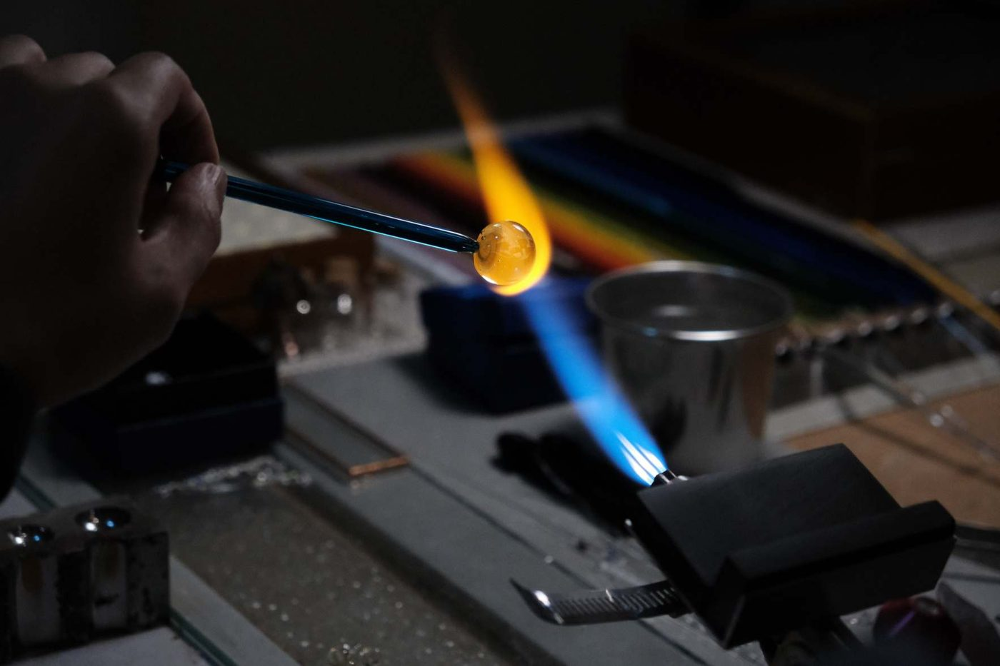

全手工燒製
紋理走向無法指定，每顆皆獨一無二
可加入的紀念元素
毛髮、骨灰、指甲、牙齒或舍利花
義大利・美國玻璃原材
永久珍藏，永不退色
製作約 1 至 2.5 個月
依系列排隊製作，可郵寄或到工作室領取
COLLECTIONS
七個系列，七種陪伴的方式


HOW IT WORKS
訂製只需要三件事
1
選款與選色
自由選擇款式和顏色，或交由我們依寵物的毛色設計搭配。
2
寄送紀念元素
毛髮或骨灰裝入 4×6 公分夾鏈袋，寫上姓名電話寄到工作室，或預約親自交收。
3
等待與接收
收到後排隊製作，完成後到工作室或郵寄接收，剩餘的紀念元素一併歸還。

CRAFT ・ 工藝
一把火，一根玻璃棒，
一顆只屬於牠的星球。
每件作品都在工作室的火焰前手工完成。紀念元素以 1600 度高溫加入琉璃，蛋白石星球系列的星雲紋理則以純銀蒸燻法製作。
- 玻璃原材
- 義大利／美國
- 燒製溫度
- 1600 度
- 金屬配件
- 純銀，可升級電鍍 18K
- 可選顏色
- 不透明 31 色・透明 26 色
WORKSHOP ・ 課程
親手燒一顆自己的琉璃


VISIT ・ 工作室
歡迎預約參觀
台南工作室
北區長榮路四段40號
星期一至日・全年無休
13:30 – 20:00
13:30 – 20:00
高雄工作室
中華五路939巷24號
捷運獅甲站走路10分鐘
捷運獅甲站走路10分鐘
星期二至六・國定假日休息
13:30 – 18:30
13:30 – 18:30